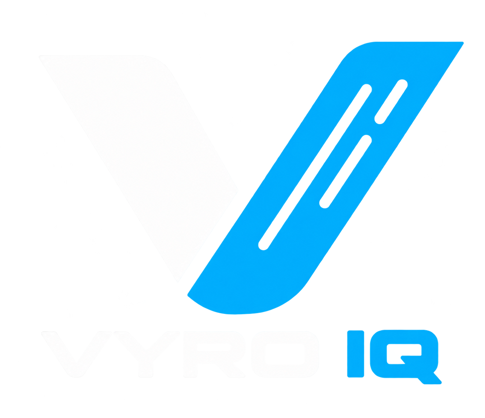

Support your players.
Manage player cohorts, monitor sessions, and configure coaching recommendation rules.

Let’s talk ↗Meet the sensor that brings
your game into focus.
A paddle-handle sensor captures each swing. See live metrics, shot analysis, and AI coaching in the VyroIQ Android app.
Enhanced rendering based on supplied product artwork.
A lightweight BLE sensor captures multi-axis motion as you play. Your phone receives the data, and VyroIQ helps you understand what happened.
It measures how you swing, classifies the shots you play, and turns practice data into guidance for improvement.
Accelerometers and gyroscopes measure paddle motion, rotation, and vibration.
Bluetooth Low Energy streams sensor data to the paired Android app.
Review your shot mix, performance trends, and personalized coaching recommendations.
Explore the actual VyroIQ interface—from connecting your sensor to reviewing your session. Tap any screen for a closer look.
The Practice screen shows swing speed, power, acceleration, rotation, and impact force, alongside your shot count and session time.
Original screenshot · Product documentation v1.0.2
Check your sensor connection, battery, and firmware before practice.
Review daily, weekly, monthly, or custom-range performance trends.
See your distribution across Dink, Volley, Drop, Drive, Lob, and Smash.
Unlock milestones as your practice and consistency develop.
All app images are original screenshots extracted from the supplied documentation. They show the recorded app state, including empty and calibration states.
VyroIQ’s impact heatmap maps contact across the paddle face. See the balance between sweet-spot, upper, lower, and edge contact—and find a more focused starting point for training.
Actual heatmap view from the product documentation.
For pickleball clubs, academies, paddle brands, and OEM partners. Connect player development with the operations behind your hardware.
Manage player cohorts, monitor sessions, and configure coaching recommendation rules.
Monitor sensor connectivity, battery health, firmware inventory, and over-the-air rollouts.
Support multi-brand paddle catalogs, calibration profiles, and white-label platform capabilities.
A compatible VyroIQ paddle sensor and the VyroIQ Android app. Pair the sensor over Bluetooth Low Energy, then start a practice session.
VyroIQ presents swing speed, power, rotation, acceleration, and impact force, and uses motion data to classify six shot types.
Keep your Android phone courtside, such as on a bench or in your equipment bag, within 10 meters of play.
It analyzes your session patterns across areas such as accuracy, swing speed, and consistency to generate personalized coaching recommendations for your next practice.
The supplied product documentation covers Android. iPhone availability has not been specified.
For players, clubs, academies, and connected paddle brands.